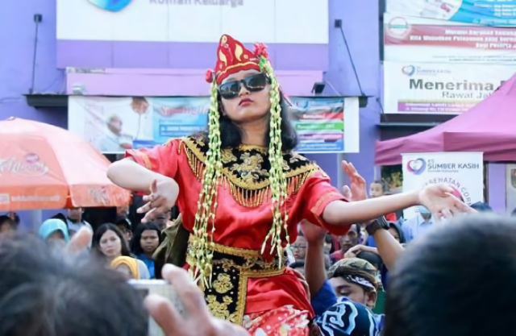

Sejarah Budaya - Tari Sintren Brebes
Tari Sintren Brebes
Sejarah Budaya Brebes

Tari Sintren merupakan tarian khas Brebes yang terkenal dengan unsur mistis di dalamnya karena adanya ritual khusus untuk pemangilan roh atau dewa.
Menurut sejarahnya, tarian ini berawal dari percintaan Raden Sulandono dan Sulasih yang tidak mendapat restu dari orang tua Raden Sulandono. Sehingga Raden Sulandono di perintahkan oleh ibunya untuk bertapa dan diberikan selembar kain sebagai sarana kelak untuk bertemu dengan Sulasih setelah pertapaannya selesai. Sedangkan Sulasih diperintahkan untuk menjadi penari di setiap acara bersih desa yang di adakan sebagai syarat untuk bertemu Raden Sulandono.
Saat pertunjukan rakyat yang diadakan untuk memeriahkan bersih desa, pada saat itulah Sulasih menari sebagai bagian pertunjukan. Malam itu saat bulan purnama, Raden Sulandono pun turun dari pertapaannya dengan cara bersembunyi sambil membawa kain yang diberikan oleh ibunya. Pada saat Sulasih menari, dia pun di rasuki kekuatan Dewi Rantamsari sehingga mengalami trance. Melihat seperti itu Raden Sulandono pun melemparkan kain tersebut sehingga Sulasih pingsan. Dengan kekuatan yang di miliki oleh Raden Sulandono, maka Sulasih dapat dibawa kabur dan keduanya mewujudkan cita-citanya untuk bersatu dalam cinta. Sejak saat itulah sebutan Sintren dan balangan muncul sebagai cikal bakal dari Tari Sintren ini. Istilah Sintren adalah keadaan saat penari mengalami kesurupan atau trance. Dan istilah Balangan adalah saat Raden Sulandono melempar kain yang di berikan oleh ibunya.
Di dalam pertunjukan sintren diperlukan beberapa pemain yang memiliki tugasnya masing-masing diantaranya adalah kemladang (pawang), pembantu kemladang, penari sintren, dua orang bodor, juru kawi (pesinden), pengrawit yang jumlahnya lebih dari 5 orang. Peran kemladang cukup penting sebagai penghubung antara penari sintren dengan roh. Tugas berat yang dipikul kemladang menjadikan sebelumnya ia melakukan ritual puasa.
Untuk menjadi seorang sintren, persyaratan yang utama adalah penari diharuskan masih gadis dan perawan. Hal ini dikarenakan seorang sintren harus dalam keadaan suci dan penari sintren merupakan “bidadari” dalam pertunjukan. Bahkan sebelum menjadi seorang sintren sang gadis diharuskan berpuasa terlebih dahulu, hal ini dimaksudkan agar tubuh si gadis tetap dalam keadaan suci. Karena dengan berpuasa otomatis si gadis akan menjaga pola makannya, selain itu dia akan menjaga tingkah lakunya agar tidak berbuat dosa dan berzina. Sehingga tidak menyulitkan bagi roh atau dewa yang akan masuk ke dalam tubuhnya.
Adapun perlengkapan pementasan yang dibutuhkan berupa: kembang sesaji, kemenyan, tempat dupa, stagen, kaca mata hitam, sampur , hiasan kembang melati yang dironce, perhiasan, BH, kain, kebaya, sanggul, dan kurungan yang diselubungi kain hitam. Pakaian bodor berupa ikat kepala, pakaian, celana komprang, sarung, dan sabuk. Ada beberapa lagu wajib dalam mengiringi pertunjukan sintren yaitu: turun sintren, solasih, uwak-uwak bango, bayem ceprol, dan kacang dawa.
Our Networks
Untuk meningkatkan kualitas dan menjaga kelestarian
Kita bekerja sama dengan pemerintah